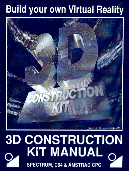

3D Construction Kit
Incentive Software, 1991
Written by Major Developments
3D Construction Kit
SPECTRUM, C64 & AMSTRAD CPC
CONTENTS
Introduction
Registration and Acknowledgements
Loading Instructions
Introduction to Freescape
Introduction to the Editor
The User Interface
Movement and Viewpoint Controls
The 3D Kit Game
Creating and Editing your First Object
File Menu Options
General Menu Options
Area Menu Options
Condition Menu Options
The Short-Cut Icons
Conditions - Freescape Command Language (FCL)
Examples
Variables and How to Use Them
Handling Values Greater than 255
Using the Compiler
Hints and Tips
Appendix